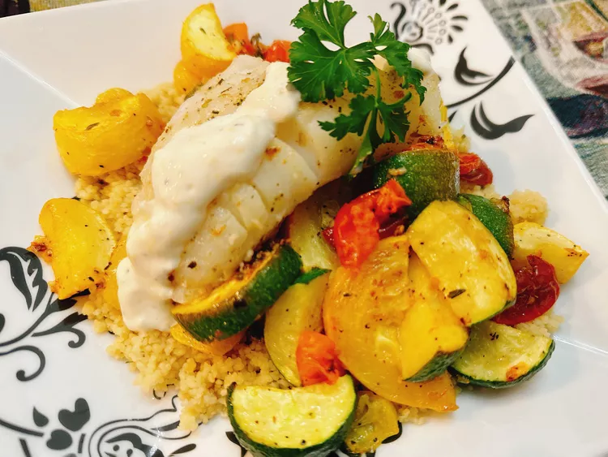

Pan-seared cod with lemon aioli

Description
This lovely pan-seared cod with an easy, homemade lemon aioli cooks exceptionally fast. Pair with oven roasted vegetables and couscous for a fast, but filling weeknight meal.
Ingredients
Lemon Aioli:
- 2 tablespoons mayonnaise
- 1/2 teaspoon lemon zest
- 1 teaspoon lemon juice, or more to taste
- 1 teaspoon lemon juice, or more to taste
- salt and freshly ground black pepper to taste
- 1 teaspoon milk, or more as needed
Cod:
- 4 (6 ounce) cod filets
- 1 tablespoon olive oil
- 1 tablespoon unsalted butter
- 1 teaspoon Italian seasoning
Steps
- For lemon aioli: Stir mayonnaise, lemon zest, lemon juice, and grated garlic together in a small bowl. Season to taste with salt and pepper. Thin to a drizzling consistency with milk.
- For fish: Pat fish dry with a paper towel. Heat olive oil and butter in a skillet over medium-high heat. Sprinkle both sides of cod with Italian seasoning, salt, and pepper.
- Add cod to the hot skillet and sear until golden brown on both sides and fish flakes easily with a fork, 3 to 4 minutes per side. Transfer to serving plates, and serve with lemon aioli.